The Labyrinth of Time
Dieser Artikel wurde für die folgenden Ubuntu-Versionen getestet:
Ubuntu 14.04 Trusty Tahr
Zum Verständnis dieses Artikels sind folgende Seiten hilfreich:
The Labyrinth of Time  ist ein Adventure aus dem Jahre 1993, welches 2009 von The Wyrmkeep Entertainment Co.™ neu aufgelegt wurde. Es basiert lose auf der Grundlage der griechischen Mythologie.
ist ein Adventure aus dem Jahre 1993, welches 2009 von The Wyrmkeep Entertainment Co.™ neu aufgelegt wurde. Es basiert lose auf der Grundlage der griechischen Mythologie.
Nach einem langen Arbeitstag fährt man mit der U-Bahn nach Hause. Während der Fahrt wird diese in eine andere Dimension gezogen und Daedalus erscheint in einer Illusion. Er baut unter König Minos an einem Labyrinth, das diesem Kontrolle über das Raum-Zeit-Kontinuum geben wird und somit Eroberungen von diversen Orten in unterschiedlichen Epochen gestatten wird. Daedalus bittet um Hilfe, das Labyrinth zu zerstören, bevor König Minos seine Pläne in die Tat umsetzen kann.
Installation¶
| 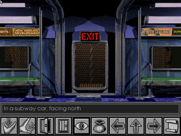 | 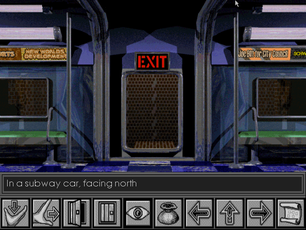 |
| DOSBox | Wyrmkeep Entertainment |
DOSBOX¶
Für die Installation genügt es, den Ordner LABW von der Spiele-CD in das Homeverzeichnis, z.B. nach ~/Spiele/LOT, zu kopieren und die Datei PLAYER.EXE mit DOSBox [1] zu starten. Das Spiel kann auch direkt von der CD gestartet werden. Das Handbuch findet man auf CD im Verzeichnis DEUTSCH. Dieses liegt als PDF vor.
Linux-Version¶
Das Spiel kann auf Wyrmkeep Entertainment erworben werden. Man erhält einen Registrierungsschlüssel und Registrierungsname per E-Mail, mit welchem die Demoversion des Spiels zu einer Vollversion freigeschaltet werden kann. Zusätzlich hat man die Möglichkeit, das Handbuch und weitere Produkte käuflich zu erwerben.
Das Spiel von www.wyrmkeep.com  herunterladen, die Datei TheLabyrinthOfTime-1.0.1-Linux-x86-Install.tar.gz entpacken [2] und TheLabyrinthOfTime-1.0.1-Linux-x86-Install einspielen [3]:
herunterladen, die Datei TheLabyrinthOfTime-1.0.1-Linux-x86-Install.tar.gz entpacken [2] und TheLabyrinthOfTime-1.0.1-Linux-x86-Install einspielen [3]:
./TheLabyrinthOfTime-1.0.1-Linux-x86-Install
Es stehen 10 Sprachen (u.a.  , und
, und  ) zur Auswahl. Nach erfolgreicher Installation ist die Demo-/Vollversion unter "Anwendungen -> The Labyrinth of Time -> The Labyrinth of Time" zu finden. Dort kann ebenfalls das Spiel deinstalliert werden.
) zur Auswahl. Nach erfolgreicher Installation ist die Demo-/Vollversion unter "Anwendungen -> The Labyrinth of Time -> The Labyrinth of Time" zu finden. Dort kann ebenfalls das Spiel deinstalliert werden.
Spielstände werden im versteckten Ordner ~/.TheLabyrinthOfTime abgelegt.
CD¶
Sofern man die CD erworben hat, kann man das Spiel mit einem  Doppelklick auf play.sh direkt starten. Die Installation kann mit einem Doppelklick auf setup.sh gestartet werden.
Doppelklick auf play.sh direkt starten. Die Installation kann mit einem Doppelklick auf setup.sh gestartet werden.
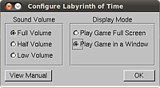
Konfiguration¶
Beim ersten Start kann man die Lautstärke und Darstellungsgröße (Vollbild/Fenstermodus) einstellen - dies kann später im Spiel immer noch angepasst werden. Über "Try" wird die Demoversion gestartet. Hat man die Lizenz erworben, kann diese in die dafür vorgesehenen Felder eingegeben werden. Die Registrierung wird mit "Register" abgeschlossen.
Steuerung¶
| Steuerleiste | |
| Schaltfläche | Beschreibung |
| Gegenstände aufnehmen | |
| Gegenstände verschieben und wegziehen | |
| 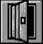 | Gegenstand öffnen |
| Gegenstand schließen | |
| 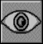 | Gegenstand näher betrachten - ein zweiter Klick zur genaueren Betrachtung. |
| 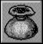 | Inventar ansehen  und Inventar-Steuerleiste anzeigen. und Inventar-Steuerleiste anzeigen. |
| Charakter steuern: links drehen, vorwärts gehen und nach rechts drehen. | |
| 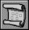 | Karte betrachten - verlassen mit |
| Steuerleiste für das Inventar | |
| 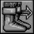 | Zurück zum Spiel / |
| Spielstand speichern/laden | |
| 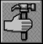 | Den im Inventar angewählten Gegenstand benutzen |
| Den im Inventar befindlichen Gegenstand betrachten | |
| Durch das Inventar scrollen. | |
| 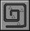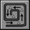 | Brotkrumenspur |
Tastenkürzel¶
| Wyrmkeep Entertainment | |
| Taste(n) | Funktion |
| Q / X | Spiel verlassen |
| F1 | Fenstermodus / Vollbild |
| Alt Gr + 8 / Alt Gr + 9 | Lautstärke anpassen |
| Z | Konfiguration speichern |
| Esc | Teil überspringen |
Weitere Tastenkürzel sind hier zu ersehen.

Infobox¶
| The Labyrinth of Time | |
| Genre: | Adventure |
| Sprache: | |
| Veröffentlichung: | 1993 / 2009 |
| Publisher: | Electronic Arts / Wyrmkeep Entertainment |
| Systemvoraussetzungen: | 512k RAM, 2MB XMS, 386/16 MHz+, MS DOS 3.3+, Double-speed CD-ROM, SVGA VESA kompatible Grafikkarte, Soundkarte |
| Medien: | CD (1) / Download |
| Strichcode / EAN / GTIN: | 5015839342448 |
| Läuft mit: | DOSBox und nativ |
- Erstellt mit Inyoka
-
 2004 – 2017 ubuntuusers.de • Einige Rechte vorbehalten
2004 – 2017 ubuntuusers.de • Einige Rechte vorbehalten
Lizenz • Kontakt • Datenschutz • Impressum • Serverstatus -
Serverhousing gespendet von